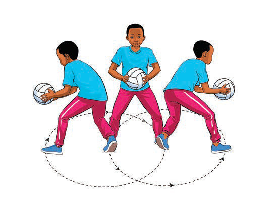

Kielelezo namba 14: Kubadili mwelekeo
(d) Kufunga
Kufunga ni kurusha mpira kwa usahihi ili uingie kwenye goli la timu pinzani kama inavyoonekana kwenye Kielelezo namba 15. Kufunga ni stadi muhimu katika netiboli, ambapo wachezaji wa nafasi za mfungaji (GS) na mshambuliaji (GA) pekee ndio wanaruhusiwa kufunga. Ili kufunga kwa ufanisi mchezaji anapaswa kuzingatia yafuatayo:
Kushika mpira kwa usahihi. Mchezaji anapaswa kushika mpira kwa mkono mmoja au miwili, kulingana na umbali wake kutoka kwenye wavu. Vidole vinapaswa kuwa wazi kuutuliza mpira juu ya viganja ili kuwa na udhibiti mzuri.
Kunja magoti kidogo. Mchezaji anapaswa kukunja magoti kidogo kisha kusukuma mwili juu ili kupata nguvu ya kurusha na kuongeza usahihi wa mpira kuelekea wavuni.